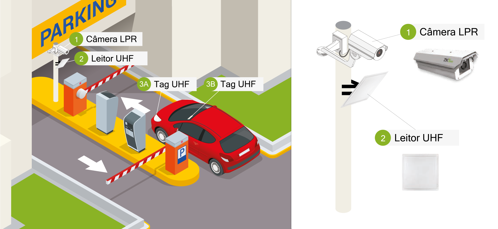
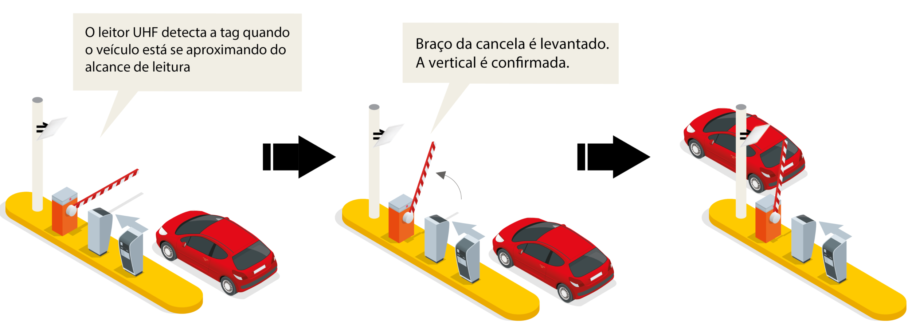
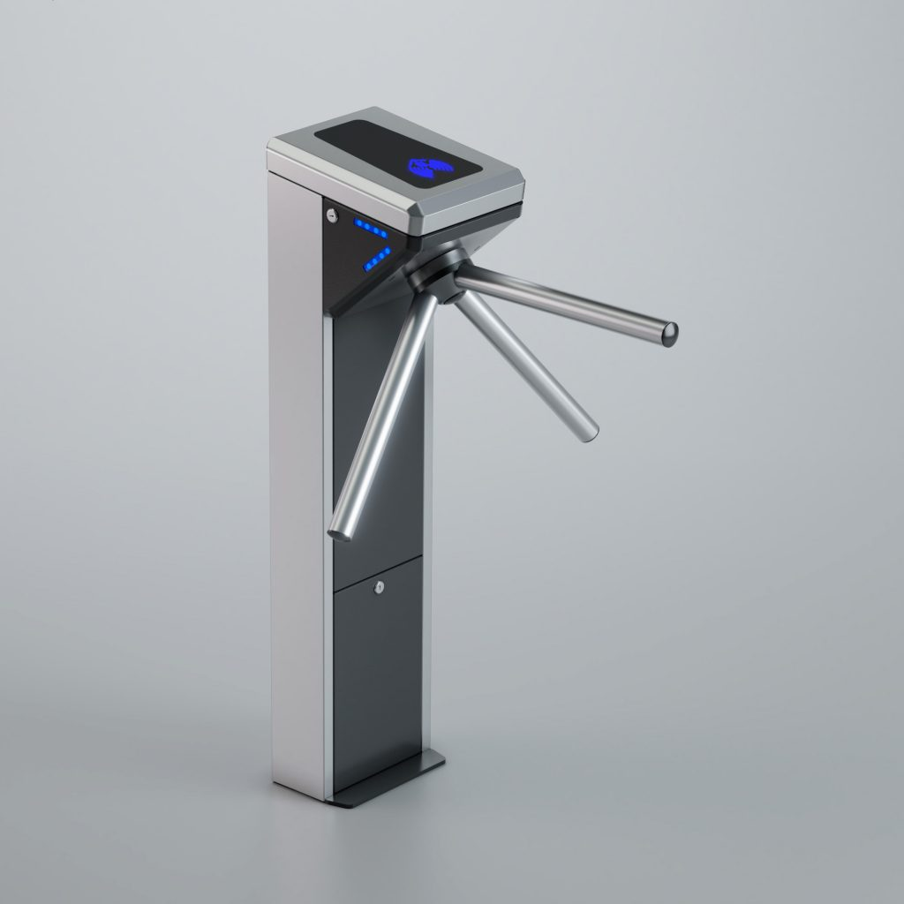

Politica de Segurança de informação
- Inventatio
- Porprietario
- Uso aceitavel
- Devolução
- Gerenciamento
- Descarte
- Transferencia
- registro cancelamento
- Acesso do usuario
- Acessos privilegiados
- Altenticação de Usuario
- retirada ou ajuste de acesso
- Areas seguras
- Controle de entrada
- Perimetro
- tipos para escritorio ,sala instalações
- Porteção contra ambiental
- Areas de entraga de carregamento
- restrição a infomação
- entradano sistema login
- sistema de senhas
- Controle da rede
- Segurança do serviço da rede
- segregação de rede
- Segurança dos cabos
- Manutenção de equpamentos
- Remoção dos ativos
- reutilização ou descarrte
- equipamentos sem monitoração
- Regiustro de eventos
- Porteção de logs
- logs do administrador e operador
- Sincronização de relogios
Toda empresa deve se adquar ao regras e padroes,devendo ser adequadamente utilizado e protegido contra
riscos, ameaças, violações, acessos não
autorizados e danos.
É imprescindível, portanto, a adoção de condutas, normas e
procedimentos padronizados que tenham como objetivo garantir a proteção dos três
aspectos básicos da segurança da informação:
- confidencialidade.
- integridade.
- disponibilidade.
Pois tem por objetivo possibilitar o gerenciamento
da segurança em uma organização, estabelecendo regras e padrões para proteção
da informação.
A política possibilita manter a confidencialidade, garantir que a informação
não seja alterada ou perdida e permitir que a informação esteja disponível quando for necessário.
Politicas aplicadas
Política Nacional de Segurança da Informação
Dispositivos movel e Teeltrabalho
Dispositivos móveis ou uquipamentos eletronicos
Anexo A.6.2.1.
É estritamente proibido o uso de dispositivos móveis de uso pessoal em todos os setores e locais da empresa. Somente aparelhos fornecidos pelo empregador estão autorizados para uso durante o expediente.
Somente serão tolerados Dispositivos móveis , Notebooks ou Dispositivos Eletronicos pessoais em locais indicados:
- Portaria
- Refeitorio
- Sala de Espera
- Área de descompressão
- Área Indicadas com placas de sinalização
Teletrabalho ou Trabalho Remoto
Anexo A.6.2.2.
Todo e qualquer trabalho remoto deve ser comunicado com um aviso prévio de 1 semana para que sejam implementadas as medidas de segurança necessárias para controle de acesso à rede de forma remota.
O colaborador terá acesso a um dispositivo fornecido pelo empregador, um Notebook Dell Nitro 5, com código de identificação específico, estando acordado entre as partes o seguinte:
- É proibida a instalação ou execução de programas ou aplicações que não tenham sido fornecidos pelo empregador.
- O uso de proxy ou VPNs que não sejam fornecidos pela empresa é estritamente proibido.
- A destruição ou adulteração do sistema operacional do dispositivo será considerada uma conduta antiética, sujeita a penalidades administrativas.
- Não será aceito o uso de dispositivos incompatíveis com o número de série fornecido ou com hardware diferente do especificado.
- O colaborador tem a obrigação de seguir as normas de Segurança da Informação, mesmo durante o trabalho remoto.
- A devolução do aparelho deve ser feita no prazo acordado
Adequação ou elaboração de cláusulas contratuais / informativos para RH
A.7.1.2 Termos e condiçoes de contratação
Durante as etapas de recrutamento, seleção e admissão do novo colaborador,podem ser solicitados, informações básicas do profissional, como nome completo, endereço, número de telefone, e-mail, data de nascimento, estado civil, nacionalidade, número de identidade e CPF.
Possível incluir informações relacionadas à formação acadêmica do candidato, experiência profissional, habilidades, referências, salário anterior e expectativas salariais.
Sem que isso signifique qualquer descumprimento à LGPD.
No entanto, é importante lembrar que a coleta de dados sensíveis, como etnia, religião, orientação sexual, entre outras, é proibida,sem o consentimento co titular, pela lei, a menos que haja uma justificativa legal ou consentimento explicito.
LGPD Artigo 11,Artigo 12,Artigo 13
Artigo 11
Caput: O tratamento de dados pessoais sensíveis somente pode ocorrer nas seguintes hipóteses:
I - Quando o titular ou seu responsável legal consentir, de forma específica e destacada, para finalidades específicas.
II - Sem fornecimento de consentimento do titular, nas hipóteses em que for indispensável para:
-
cumprimento de obrigação legal ou regulatória pelo controlador;
-
tratamento e uso compartilhado de dados necessários à execução, pela administração pública, de políticas públicas previstas em leis ou regulamentos;
-
realização de estudos por órgão de pesquisa, garantida, sempre que possível, a anonimização dos dados pessoais sensíveis;
-
exercício regular de direitos, inclusive em contrato e em processo judicial, administrativo e arbitral;
-
proteção da vida ou da incolumidade física do titular ou de terceiro;
-
tutela da saúde, exclusivamente, em procedimento realizado por profissionais de saúde, serviços de saúde ou autoridade sanitária;
-
garantia da prevenção à fraude e à segurança do titular, nos processos de identificação e autenticação de cadastro em sistemas eletrônicos.
Artigo 12
Caput: Nos casos em que o tratamento de dados pessoais sensíveis se der sem o consentimento do titular, será necessário, sempre que possível, a anonimização dos dados pessoais sensíveis.
A.7.2.2 Trinamentos
Todos os novos colaboradores e contratados devem completar um treinamento de integração em segurança da informação antes de obter acesso aos sistemas de informação da empresa.
O treinamento deve cobrir:
- Políticas de segurança da informação
- Procedimentos de segurança
- Boas práticas de segurança
- Responsabilidades do colaborador
Treinamentos regulares devem ser realizados para todos os colaboradores, com frequência mínima anual.
Os treinamentos contínuos devem incluir:
- Atualizações de políticas e procedimentos
- Novas ameaças e vulnerabilidades
- Simulações de incidentes de segurança
- Revisões de boas práticas
Colaboradores em funções críticas ou com acesso a informações sensíveis devem receber treinamento adicional
específico para suas responsabilidades.
Exemplos incluem:
- Administração de sistemas e rede ou equipe de TI
- Recursos Humanos(RH)
Todos os treinamentos devem incluir uma avaliação para medir a compreensão e a retenção dos conhecimentos.
Resultados das avaliações devem ser monitorados para identificar áreas de melhoria e ajustar os programas de treinamento conforme necessário.
Relatórios de participação e desempenho nos treinamentos devem ser mantidos e revisados periodicamente.
Enserramento ou mudança na contratação ou acesso
A.7.3.1
O Departamento de Recursos Humanos (RH) terá acesso restrito ao sistema para exclusão de Colaboradores de Baixo Privilégio.
O cancelamento de acesso será requisitado diretamente ao RH, e após a confirmação do cancelamento, o prazo para efetivar a exclusão de acesso do colaborador no sistema será de 1 hora.
O aumento de privilégios de colaboradores será realizado pela equipe de TI, mediante autorização do Departamento de Recursos Humanos (RH), conforme acordado entre ambas as partes. Um exemplo do procedimento:
- Identificação (ID) ou Nome Completo do funcionário.
- Setor em que trabalha.
- Novo tipo de privilégio ou área a frequentar.
Após a mitigação pelo setor de TI, o privilégio será aplicado. O acesso pode ser negado caso haja uma indevida atribuição de tarefas ou área/setor incompatível com o quadrante do funcionário.
Porteção e controle de Ativos
A.8.1.1
Todos os ativos de informação devem ser identificados e registrados no inventário de ativos.
O inventário deve incluir, mas não se limitar a:
- Hardware (servidores, computadores, dispositivos móveis)
- Software (sistemas operacionais, aplicativos, licenças)
- Dados e informações (bancos de dados, arquivos, documentos)
- Dispositivos de armazenamento (discos rígidos, pen drives)
- Recursos de rede (roteadores, switches, firewalls)
- Outros recursos (mídias de backup, documentos impressos)
Cada ativo no inventário deve incluir informações detalhadas, como:
- Descrição do ativo
- Proprietário do ativo
- Localização física ou lógica
- Valor ou importância do ativo
- Data de aquisição
- Estado ou condição atual
- Medidas de segurança aplicáveis
- Data da última revisão ou atualização do inventário
| Descrição do ativo | Proprietário do ativo | Localização física ou lógica | Valor ou importância do ativo | Data de aquisição | Estado ou condição atual | Medidas de segurança aplicáveis | Data da última revisão ou atualização do inventário |
|---|---|---|---|---|---|---|---|
| Servidor de Banco de Dados Primário | João Silva | Data Center, Rack 3, Unidade 5 | Alto | 15/02/2021 | Em operação | Controle de acesso biométrico, criptografia de dados, firewall dedicado | 01/03/2024 |
O inventário de ativos deve ser atualizado regularmente para refletir adições, mudanças ou descomissionamentos de ativos e Revisões periódicas (pelo menos anualmente) devem ser realizadas para garantir a precisão e a completude do inventário.
Medidas de segurança apropriadas devem ser implementadas para proteger cada ativo, conforme sua classificação e valor exemplos de medidas de proteção incluem controle de acesso, criptografia, backups regulares e monitoramento de segurança.
Todos os colaboradores devem receber treinamento sobre a importância do inventário de ativos e suas responsabilidades na manutenção e proteção dos ativos e sessões de conscientização devem ser realizadas regularmente para manter o conhecimento atualizado.
A.8.1.2
Cada ativo deve ter um proprietário designado,da equipe de TI, que será responsávelpela gestão e proteção do ativo.
- Assegurar que o ativo seja adequadamente registrado no inventário.
- Garantir que as medidas de segurança apropriadas sejam implementadas e mantidas.
- Monitorar o uso do ativo e relatar qualquer incidente de segurança.
A.8.1.3
Os ativos de informação devem ser utilizados de maneira responsável e ética, exclusivamente para fins relacionados às atividades da empresa.
Os colaboradores e contratados devem seguir as diretrizes de uso aceitável, que incluem:
-
Uso Autorizado:
- Utilizar os ativos apenas para tarefas autorizadas e relacionadas ao trabalho.
Proteção dos Ativos: Não compartilhar informações sensíveis com pessoas não autorizadas e proteger os ativos contra acesso não autorizado.
- Utilizar os ativos apenas para tarefas autorizadas e relacionadas ao trabalho.
-
Conformidade com Leis e Políticas:
- Cumprir todas as leis aplicáveis, regulamentações e políticas internas da empresa.
-
Respeito aos Direitos de Propriedade Intelectual:
- Não copiar ou distribuir software ou outras propriedades intelectuais sem permissão adequada.
Uso da Internet e E-mail: Usar a internet e o e-mail corporativo de maneira apropriada, evitando atividades ilegais ou inadequadas.
- Não copiar ou distribuir software ou outras propriedades intelectuais sem permissão adequada.
-
Consequências do Uso Indevido:
- O uso inadequado dos ativos pode resultar em medidas disciplinares, que podem incluir advertências, suspensão ou demissão, conforme a gravidade da violação.
Rotulos e tratamento
A.8.2
Categorias de Classificação:
Toda informação deve ser rotulada de acordo com a sua classificação.
Rótulos devem ser claramente visíveis e legíveis, e aplicados tanto a informações físicas quanto digitais.
- Confidencial:
- Informação cujo acesso é restrito e cuja divulgação não autorizada pode causar danos significativos à empresa.
- Interno:
- Informação que é destinada ao uso interno da empresa e cuja divulgação não autorizada pode causar danos moderados.
- Público:
- Informação que pode ser divulgada sem restrições e cujo acesso é irrestrito.
Toda informação deve ser rotulada de acordo com a sua classificação.
Rótulos devem ser claramente visíveis e legíveis, e aplicados tanto a informações físicas quanto
digitais.
Tratamento da Informação.
- Confidencial:
- Deve ser acessada somente por pessoal autorizado, armazenada em locais seguros, e transmitida usando métodos criptografados.
- Interno:
- Deve ser acessada por funcionários e parceiros conforme necessário, armazenada em áreas controladas, e transmitida usando métodos seguros.
- Público:
- Pode ser acessada e distribuída livremente, mas deve ser protegida contra alterações não autorizadas.
Ciclo de Vida da Informação.
Garantir que a informação seja corretamente classificada e rotulada no momento da criação.
Criação: Garantir que a informação seja corretamente classificada e rotulada no momento da criação.
Armazenamento: Proteger a informação conforme sua classificação, utilizando controles de acesso apropriados.
Transmissão: Utilizar métodos seguros para transmitir informações sensíveis, como criptografia para dados confidenciais.
Descarte: Descartar informações de maneira segura conforme sua classificação, incluindo a destruição física de mídias e a exclusão segura de arquivos digitais.
Tratamento de Mídias Removíveis
A.8.3.
Mídias removíveis, como pen drives, CDs, DVDs e discos externos, devem ser gerenciadas para garantir a proteção
adequada das informações armazenadas.
Acesso a mídias removíveis deve ser restrito a pessoal autorizado.
Descarte.
- Mídias removíveis que não são mais necessárias devem ser descartadas de maneira segura.
- Procedimentos de descarte seguro incluem a destruição física das mídias ou a exclusão segura dos dados, conforme apropriado.
- O descarte deve ser registrado e documentado, incluindo a data e o método de descarte.
Transferência.
-
A transferência de informações em mídias removíveis deve ser realizada de forma segura para evitar acesso não autorizado.
-
Informações confidenciais transferidas em mídias removíveis devem ser criptografadas.
-
Mídias removíveis devem ser transportadas em condições seguras, com controle rigoroso de acesso durante todo o processo de transferência.
Politica de controle de acesso Fisico
A.9.1.1.
O acesso às dependências da empresa é estritamente reservado para funcionários e terceiros devidamente cadastrados. Qualquer indivíduo que não atenda aos padrões estabelecidos poderá ser considerado uma ameaça à segurança, tanto física quanto lógica.
O cesso fisico e Feito em Etapas e é segmentado em tada a empressa.
Temos dois blocos de acesso quais chamamos de Predio e Galpão com seus setores.
Galpão:
Predio:
Visão Geral.
O controle de acesso principal sera na entrada ou Portaria
onde apos a validação sera liberado o acesso ao funiconario.
Veiculos:


Troniquete:
Tipos para escritorio ,sala instalações:
Salas Livre sendo elas:
- Refeitorio
- Salas de descompressão
- Banheiros
Contarão com controle pormeio do sistema de reconhecimento facial
com controles mais simples:

Portas de nivel 1 como:
- Faruramento
- Financeiro
- Compras
Terao sistema de reconhecimento facil:
Portas de nivel 2 como:
- TI
- Estoque
- Direção
Terão reconehcimento facil + biometria para maior segurança:
.jpg)
A.9.3.
Os funcionários estão obrigados a seguir as condutas de segurança listadas a seguir:
-
Acesso restrito ao setor designado ou autorizado por seu superior.
-
É terminantemente proibido o acesso aos setores de trabalho portando itens pessoais.
-
Dispositivos móveis podem ser levados, desde que estejam em conformidade com as restrições e obrigações de conduta estabelecidas neste documento.
-
É absolutamente inadmissível a entrada, por qualquer meio, de familiares, amigos ou funcionários em setores utilizando credenciais pertencentes a terceiros.
Cadastro:
O cadastro do colaborador será realizado após a efetiva contratação, mediante sua assinatura nos termos de privacidade fornecidos pelo Departamento de Recursos Humanos no momento da contratação. Durante esse processo, serão requeridos os seguintes dados:
- Fotografia para reconhecimento facial (podendo ser única ou múltipla).
- Coleta de impressão digital.
- Placa do veículo (opcional).
Tais dados serão salvos e armazenados para o controle de acesso físico dos colaboradores. Além disso, será fornecido um login com senha para acesso à rede Wi-Fi livre do local.
Dando assim acesso de Baixo nivel ao Colaborador.
Usuarios de Medio e Alto nivel serão cadastrados pelo setor de TI.
Atualização de permissão:
No caso de necessidade de atualização cadastral, o colaborador poderá realizar tal procedimento na portaria, mediante a apresentação de documentos como CPF, RG ou CNH.
O aumento de privilégios de colaboradores será realizado pela equipe de TI, mediante autorização do Departamento de Recursos Humanos (RH), conforme acordado entre ambas as partes. Um exemplo do procedimento:
- Identificação (ID) ou Nome Completo do funcionário.
- Setor em que trabalha.
- Novo tipo de privilégio ou área a frequentar.
Após a mitigação pelo setor de TI, o privilégio será aplicado. O acesso pode ser negado caso haja uma indevida atribuição de tarefas ou área/setor incompatível com o quadrante do funcionário.
Respomsabilidade do Usuario
A.9.3:
Os funcionários estão obrigados a seguir as condutas de segurança listadas a seguir:
-
Acesso restrito ao setor designado ou autorizado por seu superior.
-
É terminantemente proibido o acesso aos setores de trabalho portando itens pessoais.
-
Dispositivos móveis podem ser levados, desde que estejam em conformidade com as restrições e obrigações de conduta estabelecidas neste documento.
-
É absolutamente inadmissível a entrada, por qualquer meio, de familiares, amigos ou funcionários em setores utilizando credenciais pertencentes a terceiros.
Acesso a rede servicos de rede
A.9.1.2:
Acesso a rede serviços de rede
Controle de Acesso:
-
Autenticação: Todos os funcionários devem usar credenciais únicas para acessar a rede.
Senhas devem ser fortes e atualizadas regularmente. -
Autorização: O acesso aos recursos de rede deve ser baseado no princípio de menor
privilégio. Somente conceder acesso necessário para a realização das funções do funcionário. -
Registro de Acesso: Mantenha um registro detalhado de todos os acessos à rede e serviços
de rede para auditoria e monitoramento.
Políticas de Senhas:
-
Complexidade das Senhas: Senhas devem ter, no mínimo, 8 caracteres, incluindo letras
maiúsculas, minúsculas, números e símbolos especiais. -
Troca Periódica: As senhas devem ser trocadas a cada 90 dias.
-
Gestão de Senhas: Proibir o uso de senhas reutilizadas ou óbvias.
Uso de Redes Seguras:
-
VPN: Requerer o uso de VPN para acesso remoto à rede corporativa.
-
Wi-Fi Seguro: Redes Wi-Fi corporativas devem ser protegidas por criptografia WPA3 e senhas
seguras. -
Segregação de Redes: Segregar redes internas (por exemplo, administração, operações) de
redes de visitantes e dispositivos IoT.
Proteção contra Ameaças:
-
Firewall: Implementar e manter firewalls para proteger a rede contra acessos não
autorizados e ataques externos. -
Antivírus e Antimalware: Todos os dispositivos conectados à rede devem ter software
antivírus e antimalware atualizado. -
Atualizações de Segurança: Aplicar atualizações de segurança e patches regularmente em
todos os dispositivos e sistemas de rede.
Políticas de Uso Aceitável:
-
Uso de Internet: Proibir o acesso a sites e serviços não relacionados ao trabalho durante o
horário de expediente. -
Downloads e Instalações: Restringir downloads e instalações de software somente a
aplicações autorizadas pela equipe de TI. -
Dispositivos Pessoais: Desencorajar o uso de dispositivos pessoais para acesso à rede
corporativa. Se necessário, tais dispositivos devem cumprir as políticas de segurança da
empresa.
Monitoramento e Auditoria:
-
Monitoramento Contínuo: Implementar soluções de monitoramento de rede para detectar e
responder a atividades suspeitas. -
Auditorias Regulares: Realizar auditorias regulares de segurança de rede para identificar e
corrigir vulnerabilidades. -
Logs: Manter logs detalhados de acessos e atividades na rede por um período mínimo de 6
meses.
Educação e Treinamento:
-
Treinamento Regular: Oferecer treinamento regular de conscientização sobre segurança
cibernética para todos os funcionários. -
Políticas de Rede: Certificar-se de que todos os funcionários leiam e compreendam as
políticas de uso de rede e serviços.
Resposta a Incidentes:
-
Plano de Resposta a Incidentes: Desenvolver e manter um plano de resposta a incidentes
cibernéticos que inclua procedimentos para identificação, contenção, erradicação e
recuperação de incidentes. -
Notificação de Incidentes: Estabelecer um canal claro para notificação imediata de incidentes
de segurança à equipe de TI ou responsável de segurança.
Backups e Recuperação de Dados:
-
Backups Regulares: Realizar backups regulares de dados críticos e armazená-los em locais
seguros e separados da rede principal. -
Testes de Recuperação: Testar regularmente os procedimentos de recuperação de dados
para garantir a integridade e disponibilidade dos backups.
Política de Privacidade e Confidencialidade:
-
Proteção de Dados: Garantir que todas as informações sensíveis e dados dos clientes sejam
criptografados em trânsito e em repouso. -
Acesso Restrito: Restringir o acesso a informações confidenciais apenas a funcionários
autorizados. -
Conformidade: Certificar-se de que as práticas de privacidade e proteção de dados estejam
em conformidade com as leis e regulamentos aplicáveis, como a LGPD (Lei Geral de Proteção
de Dados) no Brasil.
Acesso a Aplicações de rede RAP
A.9.4:
Autenticação e Autorização:
Autenticação Forte:
-
MFA (Autenticação Multifator): Implementar autenticação multifator para todos os acessos a
aplicações de rede. Isso pode incluir uma combinação de senhas, tokens de segurança, ou
autenticação biométrica. -
Credenciais Únicas: Cada usuário deve ter credenciais únicas. O compartilhamento de
credenciais é estritamente proibido.
Autorização Baseada em Função:
-
Princípio do Menor Privilégio: Conceder acesso às aplicações de rede com base no princípio
do menor privilégio. Os usuários devem ter apenas as permissões necessárias para realizar
suas funções. -
Revisão de Permissões: Realizar revisões periódicas das permissões de acesso dos usuários
para garantir que sejam apropriadas às suas funções atuais.
Controle de Acesso
VPN Segura:
-
Uso Obrigatório de VPN: Todo acesso remoto às aplicações de rede deve ser feito através de
uma VPN segura para garantir a criptografia dos dados em trânsito. -
Segurança de VPN: Utilizar protocolos de segurança modernos (como IPsec ou SSL/TLS) para
a configuração da VPN.
Monitoramento e Registro:
-
Registro de Acessos: Manter logs detalhados de todas as tentativas de acesso e acessos
realizados às aplicações de rede. -
Monitoramento Contínuo: Implementar monitoramento contínuo para detectar atividades
suspeitas e responder a possíveis incidentes de segurança.
Manutenção e Atualizações
Atualizações Regulares:
-
Patch Management: Manter todas as aplicações de rede atualizadas com os patches de
segurança mais recentes. -
Verificação de Vulnerabilidades: Realizar verificações periódicas de vulnerabilidades e
corrigir imediatamente qualquer falha identificada.
Manutenção Preventiva:
-
Monitoramento de Desempenho: Monitorar continuamente o desempenho das aplicações
de rede para identificar e resolver problemas proativamente. -
Backups Regulares: Realizar backups regulares das aplicações e dados críticos para garantir a
recuperação rápida em caso de falhas.
Política de Uso Aceitável
Treinamento de Usuários:
-
Conscientização de Segurança: Treinar todos os usuários sobre práticas seguras de acesso
remoto, incluindo a importância de senhas fortes, reconhecimento de phishing e uso correto
de VPNs. -
Política de Uso: Desenvolver e comunicar claramente uma política de uso aceitável para o
acesso a aplicações de rede.
Uso Apropriado de Dispositivos:
-
Dispositivos Corporativos: Sempre que possível, os acessos a aplicações de rede devem ser
realizados a partir de dispositivos corporativos que estejam sob o controle e monitoramento
da empresa. -
Segurança de Dispositivos Pessoais: Se for necessário o uso de dispositivos pessoais, estes
devem estar protegidos com software antivírus, firewalls e outras medidas de segurança
aprovadas pela empresa.
Resposta a Incidentes
Procedimentos de Resposta a Incidentes:
-
Plano de Resposta: Desenvolver um plano de resposta a incidentes específico para acessos
remotos, incluindo identificação, contenção, erradicação e recuperação. -
Notificação Imediata: Estabelecer um canal de comunicação claro para a notificação imediata
de incidentes de segurança relacionados ao acesso remoto.
Revisão Pós-Incidente:
-
Análise de Incidentes: Após a resolução de um incidente, realizar uma análise detalhada para
identificar as causas e implementar medidas preventivas. -
Atualização de Políticas: Revisar e atualizar as políticas de segurança de acesso remoto com
base nas lições aprendidas durante os incidentes.
Gestão de Sessões
Tempo de Sessão:
-
Tempo Máximo de Inatividade: Configurar um tempo máximo de inatividade após o qual os
usuários serão automaticamente desconectados das aplicações de rede. -
Renovação de Sessão: Implementar a renovação periódica das sessões de autenticação para
minimizar o risco de sequestro de sessão.
Encerramento Seguro:
-
Logout Obrigatório: Incentivar e, quando possível, exigir que os usuários façam logout das
aplicações de rede quando terminarem suas tarefas. -
Limitação de Conexões Simultâneas: Restringir o número de conexões simultâneas
permitidas por usuário para reduzir o risco de acessos não autorizados.
Segurança dos equipamentos
A.11.2
Organização e Gestão de Cabos:
-
Identificação: Todos os cabos devem ser devidamente etiquetados com informações de
origem e destino. -
Organização: Utilizar canaletas, braçadeiras e organizadores de cabos para manter os cabos
arrumados e evitar emaranhados. -
Acesso Restrito: Garantir que os cabos de rede e energia estejam em locais de acesso
restrito, apenas para pessoal autorizado.
Proteção Física:
-
Instalação Correta: Cabos devem ser instalados de maneira a evitar dobras excessivas e
danos físicos. -
Proteção Contra Pisoteio: Evitar que cabos sejam colocados em áreas de passagem onde
possam ser pisoteados ou danificados. -
Isolamento Adequado: Usar isolamento e proteção apropriados para cabos expostos a
ambientes potencialmente danosos (temperatura, umidade, etc.).
Manutenção de Equipamentos
Plano de Manutenção Preventiva:
-
Agendamento Regular: Estabelecer um cronograma de manutenção preventiva para todos os
equipamentos críticos. -
Registro de Manutenção: Manter registros detalhados de todas as atividades de manutenção
realizadas em cada equipamento. -
Verificação de Funcionalidade: Realizar verificações periódicas de funcionalidade para
garantir que os equipamentos estejam operando corretamente.
Manutenção Corretiva:
-
Procedimentos Padronizados: Definir procedimentos claros para a identificação, diagnóstico
e correção de falhas em equipamentos. -
Equipe Qualificada: Garantir que apenas técnicos qualificados e autorizados realizem a
manutenção corretiva. -
Peças de Reposição: Manter um estoque adequado de peças de reposição para minimizar o
tempo de inatividade.
Remoção dos Ativos
Processo de Desativação:
- Autorização: Obter autorização da gerência antes de remover qualquer ativo de TI.
- Documentação: Registrar a remoção de ativos em um sistema de inventário, incluindo
motivo da remoção e destino do ativo.
Segurança de Dados
-
Destruição de Dados: Garantir que todos os dados sejam completamente apagados ou
destruídos antes da remoção de qualquer equipamento de armazenamento. -
Confirmação: Realizar uma verificação para confirmar que a destruição de dados foi bemsucedida.
Reutilização ou Descarte
Avaliação de Reutilização:
-
Condição do Equipamento: Avaliar a condição e a funcionalidade do equipamento antes de
decidir pela reutilização. -
Atualização e Reparos: Realizar atualizações e reparos necessários para que o equipamento
possa ser reutilizado de forma eficaz e segura.
Descarte Seguro:
-
Conformidade Legal: Descartar equipamentos de acordo com as regulamentações
ambientais e de descarte de eletrônicos vigentes. -
Parcerias com Recicladores: Estabelecer parcerias com empresas de reciclagem certificadas
para garantir o descarte seguro e responsável de equipamentos. -
Registro de Descarte: Manter registros detalhados do descarte de cada equipamento,
incluindo data, método e destino final.
Equipamentos Sem Monitoração
Identificação e Rastreamento:
-
Inventário Completo: Manter um inventário atualizado de todos os equipamentos, incluindo
aqueles que não estão sob monitoração ativa. -
Etiquetagem: Etiquetar todos os equipamentos com identificadores únicos para facilitar o
rastreamento.
Segurança Física:
-
Armazenamento Seguro: Guardar equipamentos sem monitoração em locais seguros e
trancados, acessíveis apenas a pessoal autorizado. -
Acesso Restrito: Limitar o acesso a áreas onde equipamentos sem monitoração estão
armazenados.
Avaliação Periódica:
-
Verificação Regular: Realizar verificações periódicas para garantir que equipamentos sem
monitoração ainda estejam em boas condições e não tenham sido removidos sem autorização. -
Reavaliação da Necessidade: Avaliar regularmente a necessidade de manter equipamentos
sem monitoração ou integrá-los ao sistema de monitoração
Segurança de rede
A.13.1:
Controle da Rede
O controle da rede envolve o gerenciamento e a
implementação de políticas e dispositivos para controlar o tráfego de rede, garantindo
que apenas o tráfego autorizado seja permitido. Isso pode ser alcançado através de
firewalls, roteadores, switches e outras tecnologias de controle de acesso à rede (NAC Network Access Control):
-
Configuração de listas de controle de acesso (ACLs) nos dispositivos de rede para
filtrar o tráfego com base em endereços IP, portas e protocolos. -
Implementação de VLANs (Virtual LANs) para segmentar a rede e isolar diferentes
tipos de tráfego. -
Utilização de firewalls para controlar o tráfego de entrada e saída da rede, além de
inspecionar e filtrar o tráfego entre redes internas.
Segurança do Serviço da Rede
-
Atualização regular de software e firmware para corrigir vulnerabilidades
conhecidas. -
Implementação de autenticação forte para acessar serviços de rede, como SSH
(Secure Shell) e RDP (Remote Desktop Protocol). -
Configuração de serviços de rede para usar conexões criptografadas, como HTTPS para sites da web e VPN (Virtual Private Network) para acesso remoto seguro.
-
Monitoramento de atividades de rede para detectar e responder a eventos de
segurança, como tentativas de acesso não autorizado ou comportamento malicioso.
Segregação de Rede
A segregação de rede é implementada da seguinte froma :
dividi uma rede em
segmentos separados, geralmente com base em funções, departamentos ou níveis de sensibilidade dos dados.
Isso ajudara a limitar a propagação de ataques e reduzir o
impacto de violações de segurança.
-
Segmentação física usando switches e roteadores para dividir a rede em sub-redes
separadas. -
Implementação de políticas de firewall para controlar o tráfego entre segmentos de
rede, permitindo apenas o tráfego autorizado. -
Utilização de VLANs para isolar diferentes tipos de tráfego, como voz, dados e
dispositivos IoT. -
Implementação de políticas de acesso baseadas em funções (RBAC - Role-Based
Access Control) para restringir o acesso a recursos de rede com base nas
responsabilidades e privilégios dos usuários.
Procedimento operacionais
A.12.1:
Estabelecer procedimentos operacionais para garantir a eficácia e a conformidade dos
processos relacionados à segurança da informação.
-
Todos os funcionários devem estar cientes dos procedimentos operacionais relacionados
à segurança da informação e devem ser treinados regularmente sobre suas
responsabilidade -
Os procedimentos operacionais devem ser documentados e mantidos atualizados,
refletindo as melhores práticas e requisitos regulatório -
Os procedimentos operacionais devem abranger áreas como gerenciamento de acesso,
controle de mudanças, gestão de incidentes, backup e recuperação, entre outro -
As revisões regulares dos procedimentos operacionais devem ser realizadas para garantir
sua eficácia contínua e relevância para o ambiente operacional da organizaçã -
As exceções aos procedimentos operacionais padrão devem ser documentadas,
justificadas e aprovadas pelas partes interessadas apropriada -
A conformidade com os procedimentos operacionais deve ser monitorada regularmente e quaisquer desvios devem ser corrigidos e documentados adequadamente.
Poreteção contra malware
A.12.2:
Esta política tem como objetivo estabelecer diretrizes e procedimentos para
proteger os sistemas de informação da [Nome da Empresa] contra ameaças de vírus,
spam e infecções de computadores.
Controle de Vírus
-Todos os computadores e dispositivos de armazenamento de dados devem ser
equipados com software antivírus atualizado.
-
Atualizações automáticas do software antivírus devem ser habilitadas em todos os dispositivos.
-
Todos os arquivos baixados da internet, anexos de e-mail e dispositivos externos
devem ser verificados quanto a vírus antes de serem abertos ou executados.
Controle de Spam
-
Um sistema de filtragem de spam deve ser implementado nos servidores de email da empresa.
-
Funcionários devem ser instruídos a relatar e-mails suspeitos ou de phishing
imediatamente ao departamento de TI. -
A conscientização sobre segurança deve ser promovida regularmente para ajudar
os funcionários a identificar e-mails de spam.
Soluções para Computadores Infectados
-
Funcionários devem relatar imediatamente qualquer suspeita de infecção por
vírus ao departamento de TI. -
O departamento de TI deve ter procedimentos claros para isolar e limpar
computadores infectados. -
Regularmente, devem ser realizadas verificações de segurança em todos os
sistemas para identificar e resolver quaisquer infecções ou vulnerabilidades.
Responsabilidades:
-
A equipe de TI é responsável por implementar e manter as medidas de segurança
conforme descrito nesta política. -
Todos os funcionários são responsáveis por seguir as diretrizes estabelecidas
nesta política e relatar quaisquer preocupações de segurança ao departamento de TI.
Copias de segurança das infromaçoes
A.12.3:
Políticas de Backup
Frequência de Backup:
-
Diariamente: Realizar backups incrementais para capturar alterações recentes.
-
Semanalmente: Realizar backups completos dos dados críticos.
Localização dos Backups:
Armazenar cópias de backup em locais distintos, incluindo pelo menos uma cópia em um local seguro fora do servidor principal (off-site ou em Numvem)
Armazenar cópias de backup Interno:
RAID 5:
- Quantidade mínima de discos : 3
- HD Storege
Os discos podem ser mudados comforme a necessidade mas devem atender o seguinte parametros:
- Armazenamento minimo 2TB
- HD Storege de no minimo 40TB
Segurança dos Backups:
- Utilizar criptografia de disco completo (FDE) com algoritmos robustos, como AES-256.
Registro e monitoramento
A.12.3:
Registro de Eventos & Proteção de Logs
Os logs, que são os registros de eventos em formato eletrônico, devem ser protegidos contra acesso não
autorizado, alteração e exclusão.
A integridade dos logs é crucial para garantir a confiabilidade das informações registradas e para a
investigação forense em caso de incidentes.
Controle de Softwares Operacionais
A.12.5:
Esta política visa garantir que apenas softwares legítimos e licenciados sejam utilizados. É importante
seguir a legislação de propriedade intelectual para adquirir softwares de forma legal.
Para o controle algumas medidas devem ser tomadas tais como:
-
Atualizações regulares de software são essenciais para corrigir vulnerabilidades de segurança
conhecidas. Essa política envolve aplicar essas atualizações de forma regular para manter os sistemas
protegidos. -
Realizar auditorias periódicas e monitorar continuamente o uso de softwares ajuda a detectar qualquer
atividade suspeita ou não autorizada, mantendo a segurança do ambiente de TI. -
Manter um inventário atualizado de todos os softwares instalados e configurar os sistemas operacionais
de acordo com os padrões de segurança estabelecidos é crucial para garantir que os sistemas estejam
protegidos. -
Implementar medidas de proteção, como antivírus e firewalls, é fundamental para detectar e prevenir a
instalação e execução de softwares maliciosos que possam comprometer a segurança dos sistemas. -
Treinar os usuários sobre as políticas de segurança de software e conscientizá-los sobre os riscos
associados ao uso de softwares não autorizados ou não seguros ajuda a manter um ambiente de TI
seguro.
Restriçoes para instalação de software
As restrições para instalação de software em empresas são
implementadas para garantir a segurança, conformidade e eficiência dos sistemas de
tecnologia da informação.
Restrições & Deveres:
- Os usuarios devem seguir a Lista de Software Aprovados (uma lista de software
aprovado que os funcionários podem instalar)
Isso ajuda a garantir que apenas
softwares confiáveis e compatíveis com as políticas da empresa sejam
utilizados
-
A empresas precisam garantir que todos os
softwares instalados estejam devidamente licenciados -
Os funcionários
não têm permissão para instalar software sem a aprovação de um
administrador de sistema
Ajuda a evitar a instalação de softwares não
autorizados que possam representar riscos de segurança ou prejudicar a integridade do sistema.
Vulnerabilidae Tecnica
A.12.6.1:
refere-se a uma fraqueza ou falha em um sistema de
tecnologia que pode ser explorada por indivíduos mal-intencionados para comprometer a segurança desse sistema.
Mitigação:
Controle da Rede
-
Configuração de listas de controle de acesso (ACLs) nos dispositivos de rede para
filtrar o tráfego com base em endereços IP, portas e protocolos. -
Implementação de VLANs (Virtual LANs) para segmentar a rede e isolar diferentes
tipos de tráfego. -
Utilização de firewalls para controlar o tráfego de entrada e saída da rede, além de
inspecionar e filtrar o tráfego entre redes internas.
Segurança do Serviço da Rede
-
Atualização regular de software e firmware para corrigir vulnerabilidades
conhecidas. -
Implementação de autenticação forte para acessar serviços de rede, como SSH
(Secure Shell) e RDP (Remote Desktop Protocol). -
Configuração de serviços de rede para usar conexões criptografadas, como HTTPS
para sites da web e VPN (Virtual Private Network) para acesso remoto seguro. -
Monitoramento de atividades de rede para detectar e responder a eventos de
segurança, como tentativas de acesso não autorizado ou comportamento malicioso.
Segregação de Rede
-
Segmentação física usando switches e roteadores para dividir a rede em sub-redes
separadas. -
Implementação de políticas de firewall para controlar o tráfego entre segmentos de
rede, permitindo apenas o tráfego autorizado. -
Utilização de VLANs para isolar diferentes tipos de tráfego, como voz, dados e
dispositivos IoT. -
Implementação de políticas de acesso baseadas em funções (RBAC - Role-Based
Access Control) para restringir o acesso a recursos de rede com base nas
responsabilidades e privilégios dos usuários.